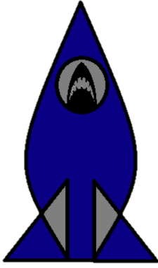

Launchbite


What is launchbite?
Launchbite is a python-powered app. all you have to do is press a button, and the app you want pops up.
This is good if you want to have your toolbar hidden, and don't want to deal with shortcuts.
How does it work?
Well, Launchbite uses the Tkinter and keyboard modules.
The Tkinter library creates the buttons. When the buttons get presses, it triggers the keyboard to press and release the windows key and a number.
Heads up, your applications must be in a certain spot for the code to function. Possibly in later versions, other means will be used.
The code is not perfect, and will no doubt be updated.
More
Please, if you have any problems with the software, let me know. Post an issue on the repo, and I will get to it as fast as I can.